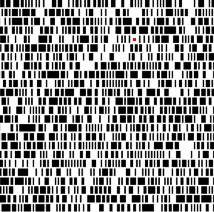

Not so noisey music
Aims
In this project, I aim to explore the musical possibilities behind Ryoji Ikeda's artwork. Given the nature of Ikedas music, and how he maps between image and sound data, I thought it would be interesting to see if I could come up with a mapping that would remove the image from the context of noise music. While any music resulting from this very simple image is going to be minimalistic, the idea of making "Not so noisey music" would be quite interesting.
Background
The source material - in this case the Twitter profile picture of so called Japanoise musician Ryoji Ikeda - is based on his visual artwork, which he has used in the past to represent his music. Ikeda's audiovisual concert datamatics is representative of this idea. In concert, Ikeda makes music and visuals that are highly related and representative of each other. Therefore, I decided to see if I could sonify his visual data in a different way to his interpretation.
Analysis
I have mapped the I/O (or black/white) value at each position in the image to a high C or a low C. The binary quality of the data lent itself to a very minimalistic implementation of a mapping. I also map the position on the image to time, the audio plays from left to right and top to bottom much like English text. This was intended to provide a point of reference for the audience, to allow them to see the mapping and understand how the visual data is being converted into sound.
Clearly this mapping is invertible because it has a one to one relationship between the domain and the codomain. If I found music with similar binary qualities it would be relatively trivial to turn it back into a barcode style image, like the source material here.
Implementation
The following is the source code for the app. The following code uses Tim Blackwell's SimpleMidiSynth java application, a link to the source can be found here
import javax.sound.midi.*;
//Instantiate SimpleMidiSynth
SimpleMidiSynth synth;
//Instantiate image and various other variables
PImage img;
int counter;
int row = 0;
int note;
void setup(){
//load image;
img = loadImage("ikeda.png");
//set window size based on image
size(img.width,img.height);
//set framerate
frameRate(480);
//construct midi synth
synth = new SimpleMidiSynth();
strokeWeight(3);
stroke(255,0,0);
}
void draw(){
//draw image each frame
image(img,0,0);
//check if note is white or black
//because the image is greyscale I can do this by only checking one of the colour values of each pixel.
//the algorithm is designed so that each row of 'barcode' in the image only gets read once.
//if the note is white, set a low note, if black set a high note.
if(red(img.pixels[(counter%214) + (counter/214)*9]) > 127){
note = 48;
}
else{
note = 84;
}
//draw a point to track where the cursor is in the image.
point(counter %214, counter/214 * 9 + 3);
//play the note on the synth for the duration required for 120 bpm, treating each note as a semiquaver
synth.play(note, 100, 125);
//incrmement counter
counter = (counter + 2);
//if we've gone past the end of the image, exit the program.
if((counter%214) + (counter/214)*9 > img.width*img.height){
exit();
}
}
void stop(){
synth.close();
exit();
}
Outcome
The following is a link to the exported applet:
Not so noisey music
This is a screenshot of the application in action. It shows the image by Ryoji Ikeda and the red dot in the middle of the 5th row showing where the cursor is in the piece.

Evaluation
In conclusion, I feel I have met the aims of my project, and have sonified the artwork in a way that is not similar to how the original artist did so. Despite the work being intended to be converted to noise music that is highly representative of the data, I have succeeded in converting the data to sound in a way that is representative. While the outcome would most likely not be considered musical in the traditional sense of the word, I have certainly broken free from the originally intended sound - noise music.
Techical note: since Apple have removed support for Applets in browsers in Mac OS X 8 I have been unable to test the applet html file that Processing generated. While I am sure that Processing 1.5.1 exported a working applet, I have tested the Jar file that Processing generated, which works. If you are unable to get the web page working, you can download the jar here.
As a side note, I had originally intended to use another data source to generate music. I had intended to sonify a listeners social life, by way of accessing and mapping their Facebook data to music. Unfortunately, I ran into some problems. The only Facebook API library that has been ported to processing was for an API that Facebook are in the process of depracating, asking new developers to use their Open Graph API which is intended for use in PHP and Javascript rather than in Processing. This problem, coupled with the fact that to access facebook data a user and all of his/her friends would have had to give my registered app the permissions to access their data meant that I had to change the aim of my project quite late in the allotted time we had to complete the project. The source code for the progress I made with that application is at this link.